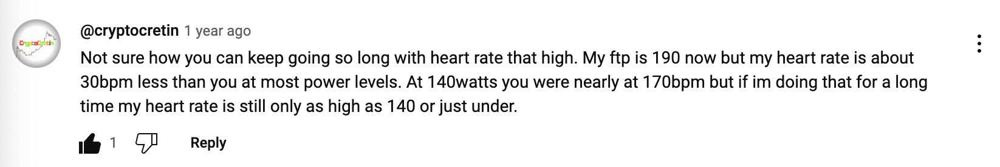
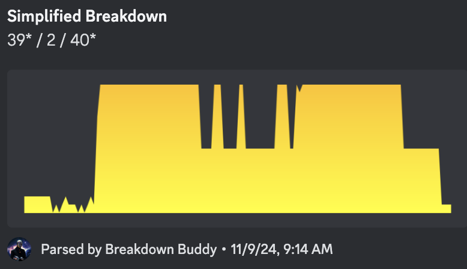
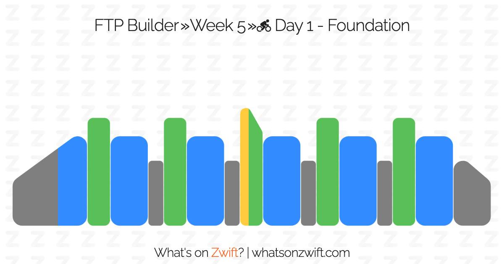
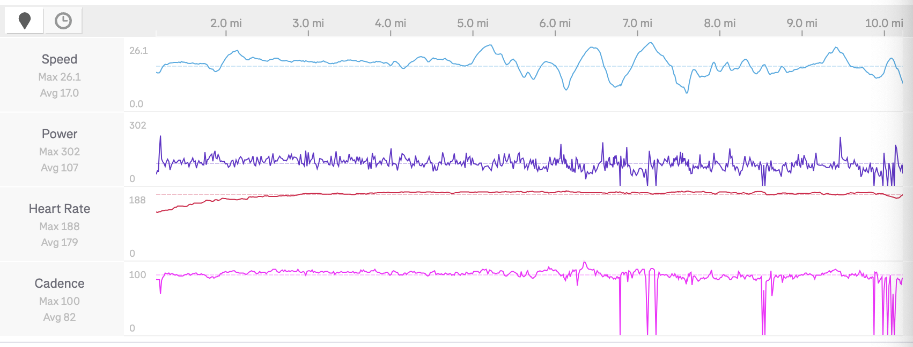
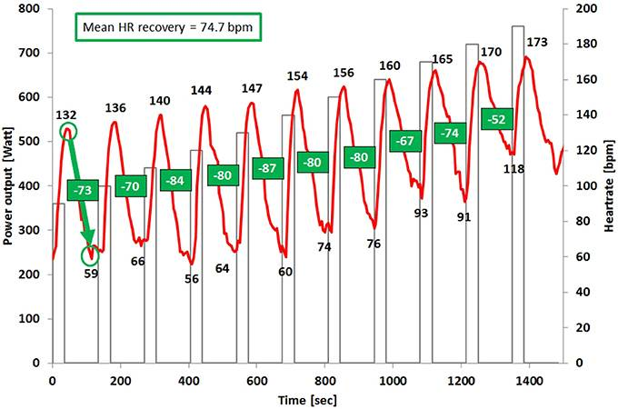

Heart Rate Notes
Table of Contents
ITG Players Have Unusual Heart Rate Zones
I have been an intermediate-level In The Groove player for a few years now, it's fair to say that up to this point that it represents a relatively high proportion of my total exercise.
Recently I have been getting into Zwift, in search of ways I can exercise which do not demand 100% of my focus1. In doing so I have noticed a peculiar thing about my fitness – namely, that my "zones" felt roughly the way they should have, but that my heart rate was extremely high for some unknown reason. I took a Lite version of the FTP Ramp Test which I was able to clear unexpectedly, and got this interesting comment from another cyclist:

I remember thinking "boy, do I have the video game for you!"
This has emerged as sort of a problem for figuring out how to pace my rides. What feels to me like a comfortable, conversational pace with weak-to-moderate effort will bring my heart rate to alarmingly high levels (~160-180 bpm2), which I seem to be able to sustain for much longer than expected. I believe this to be an artifact of the ITG Stamina player's unique athletic profile – as with most things like this, I got nerdsniped into reading a lot of papers about it.
Dance Game Player as Athlete
As refresher, "heart rate zones" refer to efforts at the following rates:
| Zone | Rate |
|---|---|
| Zone 1 (Recovery) | 55%-65% Max |
| Zone 2 (Base) | 65%-75% Max |
| Zone 3 (Tempo) | 80%-85% Max |
| Zone 4 (Threshold) | 85%-88% Max |
| Zone 5 (Anaerobic) | 90% Max |
Dance game players have a very interesting athletic profile compared to most other sports, since virtually all of the work they do is at tempo / threshold / anerobic levels. The likely best depiction of this is Sereni's guide on making stamina easier, where they paid a sports coach to help them improve at ITG. The coach told them to do most sessions at 120-140 heart rate (i.e. Zone 2 training) which corresponded to them playing 9 blocks below their max level3.
This is fine: dance games are ultimately, at their core, interval training. In stamina especially, the charts are mostly fully described by their density graphs, which are almost identical in concept to their equivalents in cycling training plans


Dance game players could be roughly described as athletes who mostly exclusively do zone 3-5 work. Most score attack records are set at decidedly tempo heart rates (including in stamina) with high block passing scores usually involving maintaining 180+ heart rate for long periods. Recovering quickly during short rests + pushing yourself to maintain focus at higher heart rates is a big part of dance games. There are notable exceptions to this, e.g. iamchris4life maintaining 144 average heart rate for 7 hours, but largely it seems like the performance sweet spot for dance games tends to be at higher bpms.
However, this is in stark contrast to how athletes in other sports train. In cycling, roughly 70% of your time is spent training at zone 2 rates. In comparison it's quite rare to spend much time at all during ITG sets under ~150 heart rate except during explicit rests.
Misalignment
In cycling, there are actually two different types of zones. There's heart rate zones, which we've seen, and power zones, which are based on instantaneous power output rather than heart rate. This is done by calculating and subsequently associating a reference value (Functional Threshold Power, or FTP). The primary difference here is that the former measures physiological response, and the latter is a more "objective" measure of the difficulty of the effort.
| Zone | Rate |
|---|---|
| Zone 1 (Recovery) | <55% FTP |
| Zone 2 (Endurance) | 55%-75% FTP |
| Zone 3 (Tempo) | 76%-90% FTP |
| Zone 4 (Threshold) | 91%-105% FTP |
| Zone 5 (VO2max) | 106%-120% FTP |
| Zone 6 (Anaerobic) | >120% FTP |
This being distinct from heart rate zones was somewhat confusing to me at first. Heart rate more directly measures how the effort is supposed to "make you feel", but it's a measurement which suffers from time lag, e.g. when you begin climbing a hill, your heart rate takes some time to get faster, whereas your power output will change instantly. Likewise, holding the same power output will obviously keep you in the same zone, but as it makes you more tired that will cause your heart rate to naturally rise over time ("cardiac drift").
But the big one is: different people will have naturally higher or lower heart rates. As a dance game player moving to cycling, I have noticed that my easier rides feel like they are often described ("conversational, moderate effort, sustainable") but correspond to very high actual heart rate values (e.g. often 175+ bpm, sometimes even reaching into zone 5). I considered this somewhat alarming at first. For example, here's a ride I did on 2024-01-03:

This felt very "medium", I did it while listening to a podcast, I'd call it comparable to playing a short session mostly in the 11 blocks. My heart rate quickly rose to 180 almost immediately, where it sustained for about 30 minutes across 10 miles. The highest I've ever seen my heart rate go is 201, so this represents a borderline zone 5 effort. That's interesting, since it very cleanly does not correspond to my subjective experience.
My understanding here is that this is actually a relatively common pattern in competitive dance game players, despite being clearly unusual. For example, I reached out to Sereni who was gracious enough to answer some questions about their post:
I had the same feedback about my HR — I could hold 210 for 10 minutes and 190 for an hour, and everyone told me it shouldn't be possible. I can't do that anymore after training in low HR, now 170 feels spicy.
– Sereni
That is, the likelihood that the observed mismatch between heart rate zones and perceived exertion is unlikely to be a quirk of my outlier genetics, but rather a direct training effect of the majority of my exercise being exclusively at relatively high heart rate. This is really interesting! Competitive dance game players have a very unusual athletic profile compared to other cardio-oriented disciplines: it's so much more about suffering with very little reward for base building compared to something like cycling or running.
A Short HIIT + Heart Rates Literature Review
It seems worthwhile to make an attempt to navigate the sports science literature on high intensity interval training, specifically what it has to say about heart rate zones, in particular. In general, most of the works were predictably about the effects of this style of training on various athletes, which makes the comparison not entirely perfect for our purposes.
An interesting place to start is Impact of Training Intensity Distribution on Performance in Endurance Athletes by Esteve et al, 2007. This study put two groups of track athletes, all specialists in 5000m races, in two different training protocols for a 5 month period. Group 1 emphasized low-intensity, subthreshold training, whereas group 2 emphasized slightly higher, mostly threshold work4. At the end of the study, all partitipants were measured at a 10.4km cross country race to evaluate them. Both groups improved substantially over the 5 month period, but the group who did most of their work in lower intensities saw a noticeably larger improvement.
This seems to be a good indication that low-intensity training is a pretty good idea. There's even a pretty easy-to-understand reason why: low intensity runners averaged about 25 more total training hours compared to the threshold-emphasis group, despite their training loads being roughly the same5. But both of these groups were subelite distance runners going into the experiment, it doesn't tell us much other than, broadly, "getting the heart rate down might be a good idea for performance."
Something potentially scoring a point for HIIT is High Intensity Interval Training Leads to Greater Improvements in Acute Heart Rate Recovery and Anaerobic Power as High Volume Low Intensity Training, by Stöggl et al, 2017. In this study, they took two very small groups of well-trained endurance athletes6, and measured how they responded to HIIT in their training7. This study was only 9 weeks (much more compatible with modern sports science ideas around periodization) and 9 weeks of HIIT resulted in fairly clear neuromuscular and anaerobic improvements. Namely, that athletes who did a short HIIT cycle became better adapted to quickly lower their heart rate with shorter periods of rest, and seemed in general less taxed by higher intensity work.

This is a better hint for what we are looking for. In the discussion, there's even acknowledgement in the discussion section that all of the participants were already well-trained endurance athletes with strong bases already:
Interestingly, the [Heart Rate Recovery] HRR seems to be acutely impaired by a high anaerobic contribution. However, the question is if this is trainable and might be different if the athlete is accustomed to more anaerobic work. Our results indicate that the athletes exposed to HIIT seemed to handle the anaerobic stress better than the [High Volume Low Intensity Training] HVLIT dominated groups indicated by their superior HRR.
But a funny note on why the dance game pattern seems yet-unobserved in the literature is that it's exceedingly rare to find somebody willing to do all of their exercise via HIIT. The Effects of High Intensity Interval Training vs Steady State Training on Aerobic and Anaerobic Capacity, from Foster et al 2015, ran a similar experiment on untrained college students, using Tabata as the HIIT protocol. They found that all the groups improved across various health metrics, but that participants assigned to HIIT found it substantially less rewarding and enjoyable compared to all the other groups:
One of the most remarkable (but perhaps not surprising) findings of this study is the significantly lower level of enjoyment in the Tabata group, and the progressively declining level of enjoyment in all groups across the course of the study. Several studies (Bartlett et al. 2011, Jung et al. 2014, Kilpartirck et al., 2012) all suggest that moderate intensity interval training may be more pleasant than moderate intensity continuous exercise. However, Tabata type protocols (very high intensity intervals with very short recovery periods) are so physically chanllenging (sic) that they are very unlikely to be perceived as pleasant.
So, it seems like dance game players occupy a niche in the fitness landscape where the gamification aspect makes it tolerable to do something which is otherwise considered profoundly miserable8.
But how does this sustained heart rate adaptation actually work? One possible hint can be found in Effects of High Intensity Interval Training on Physical Performance in Female Team Sports: A Systematic Review, a review from Stankovic et al in 2023. This was a meta-analysis of 13 studies examining HIIT interventions in well-trained Womens' sports programs. The core result here was, broadly, that HIIT has some benefits in these populations (as we have seen).
But a very small proportion of time in training for these athletes was ever spent in near-maximal heart rate, often as low as 7-9% on average. As such, even very performant groups will sometimes see useful adaptations with these interventions:
…short intervals of HIIT allow the volume and intensity to be manipulated, while HIIT with long intervals stimulates the work of the anaerobic system and neuromuscular load. Anaerobic glycolytic energy is a substantial component of the short intervals. Furthermore, field-based HIIT formats with short intervals are linked to lower initial blood lactate accumulation rates than those with long intervals. Despite the fact that a recent review had difficulties drawing stronger conclusions regarding the importance of exercise intensity for cardiovascular adaptations, the current findings may be considered relevant in these team sports.
Conclusion
So, it seems like a seemingly unusual ability to sustain high heart rate is a potentially emerging capability in athletes who spend a large proportion of their training in those heart rates. It seems sort of obvious when put that way, but it seems like the sports science literature has a really hard time finding anybody willing to do what the majority of ITG players will do on their own.
It seems useful and potentially healthy to spend the time doing low heart rate training, and I'll be updating this post with the results of my subsequent Zwift training arc. Sereni, again, provides a useful benchmark:
my low HR training was on ITG, I played 9s for the longest time, and was super bored. because I had my HR in front of my eyes at all times, I kept changing my form until I found something that lowers HR. I essentially re-invented based form from scratch that way.
although I can no longer tolerate super high HR, I think this change was overall beneficial — I can now train the same levels (17-18) as part of my daily training, and not as an all-out effort that requires substantial recovery.
If you happen to work in Sports Science academia, and happened to happen upon this post, I humbly suggest trying to find ITG players to study. Video game players have been a huge source of interesting subjects in the cognitive science literature, and it's possible they can be useful for your field, too!
Footnotes:
I also moved to an upstairs apartment, and have gotten numerous complaints from my new downstairs neighbor just from walking around my own apartment, despite not yet playing any ITG whatsoever. Hopefully he's not in for too rough of a time, Zwift should at least be a pretty manageable compromise.
This is using a chest strap, also, just before any concerns about measurements get raised.
Sereni did end up sticking to this for about three months, which I think is commendable. For me, 9 blocks below my max would put me at 7 block, which I have a very hard time playing at all when ITL rolls around.
Already not very similar to our dance game setting, where both of these are fairly light.
That is: skill improvements?
This is a very small study, n=36, but the partitipants were e.g. members of the Austrian cross-country skiing national team, the level is relatively high. Rosalie Ann Cook's Thesis on Heart Rate Zones in Collegiate Womens Soccer is a similar case; mostly observations that well-trained sub-elite soccer athletes see good anaerobic adaptations from short periods of HIIT training.
Another useful footnote: 0% of the athletes were doing HIIT before this, 100% were doing predominantly high volume low intensity training.
He says, in a post about moving from ITG to Zwift.